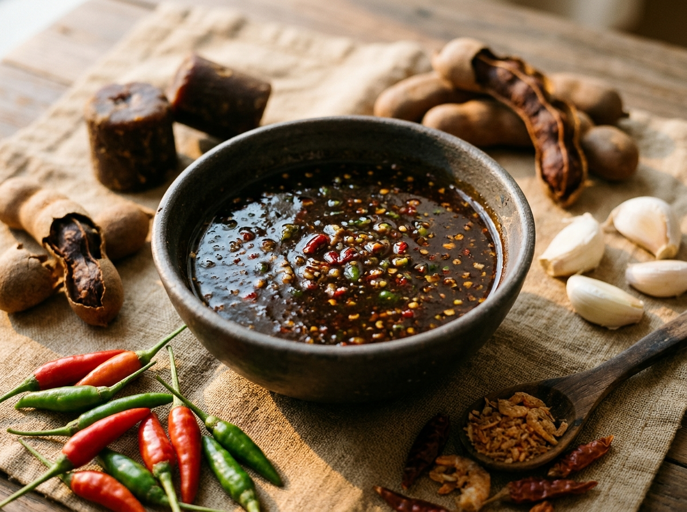

Cuko Kental Gula Aren Lubuklinggau
Dimasak perlahan menggunakan gula aren batok pekat, asam jawa asli, bawang putih segar, cabai rawit pilihan, dan ebi sangrai. Tanpa cuka biang sintetis—menghasilkan rasa pedas-manis-asam yang pekat dan ramah di lambung.
Gula Aren Batok
Asam Jawa Asli
Ebi Sangrai
0% Cuka Buatan